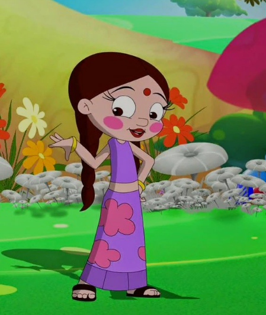
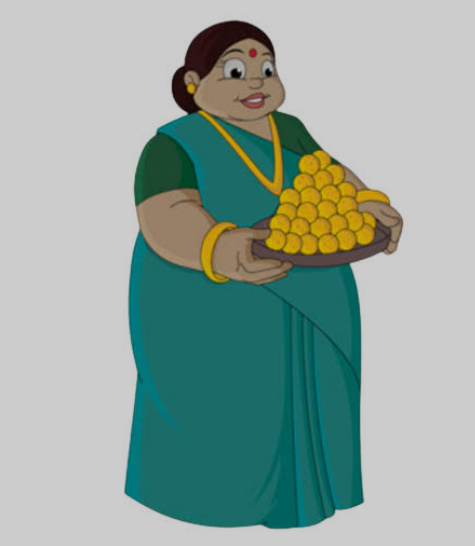

Accessibility: Accessible by road, and Google Maps shows a concrete trail for easy access. It is about 7.5 km from Saphale Railway station.
Features: It's a natural waterfall with clean water and considered a beautiful place.
Trekking: The waterfall is situated near the starting point for the Tandulwadi Fort trek. The trek is considered moderately difficult and takes about 3 hours to complete.
Best Time to Visit: The waterfall is particularly beautiful during the monsoon season (June to September) when it flows in its full glory and the surrounding landscape is lush and vibrant. It is also recommended to visit after the monsoon or after days of rain.
Nearby Attractions: Aside from the waterfall, visitors can also trek to Tandulwadi fort and explore nearby attractions
in the Palghar district like Palghar Beach, Kelva Fort, and Sanjan Beach.

Kaldurg Fort is east of Palghar, Maharashtra, India, in the Sahyadri mountain range of northern Konkan. Its height is at least 475 meters above sea level, giving views of the Arabian Sea and the industrial town of Palghar to the west, as well as views of the Surya River, to the east.
This rectangular shape of a fort can easily be located from a distance. There is no historic sign. The fort is divided into the upper part and lower part by a rectangular rock. There are a few steps that separate these two parts.
Agar aap iss line tak aa chuke he toh samajhyega ki aapko ek naya aur sabse alag acha sa gift milega. agar padhe ho toh mandar, yash or samarth kisi ek vyakti se vartalab kijiye.Gift ko aapko reveal kiya jayga. Direct safale station par aapko mil jayga. Kripiya gift ke baare me jyada soch or puche na. only ask one time.
Jo banda pehle aake bolega, use hi gift milega.

Be gratefull that we are inviting in such a unique way.
Chutki, we hope that you bring that little smile with you in our journey.If you don't then yash will be there so don't worry.
MAKE SURE TO COME

Be gratefull that we are inviting in such a unique way.
Tun-tun mosi, we hope you bring the ludoos which you are holding in your hands.It will be quite difficult for you since you are....
MAKE SURE TO COME
.png)
Be gratefull that we are inviting in such a unique way.
Surti, don,t worry about your photo because we haven,t named you any dholakpur character yet. Try not to wear any aesthetic for this trip.
MAKE SURE TO COME
Be gratefull that we are inviting in such a unique way.
Richa, it will be quite disappointing if you don't come, because you are the only one who records everything.
MAKE SURE TO COME